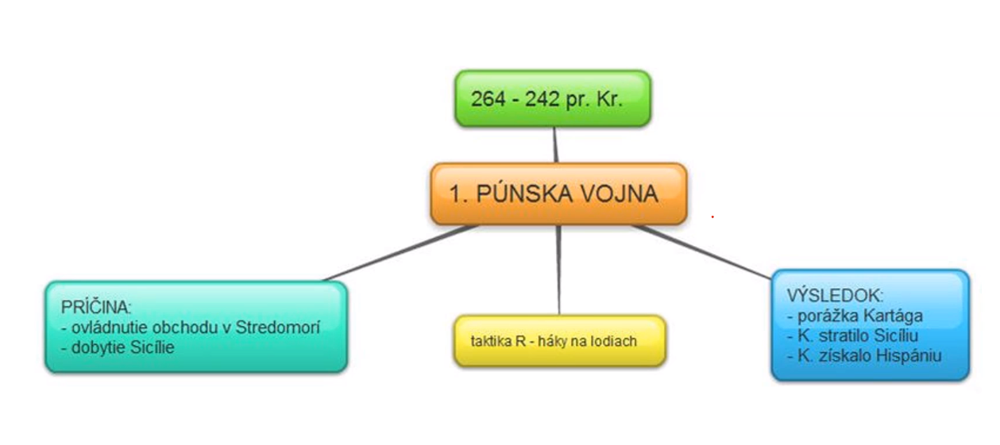
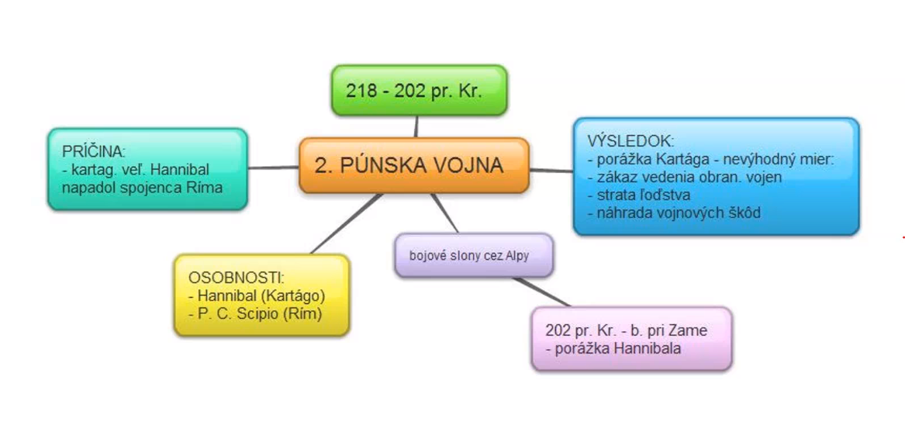
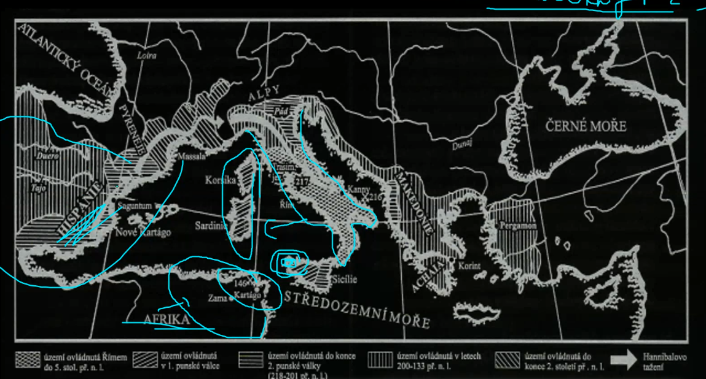

STAROVEKY RIM
- uzemie apeninskeho ostrova
- primorsky stat
- -pestuju obilie, olivy, hrozno + oce a kozy
osidlovanie
- italikovia
- illirovia
- greci
- kartaginci/puni
ETRUSKOVIA
maju pekne kovy, zavlahove hospodarstvo akokeby vychadzali z orientalnych statov odvodnovali baziny a vytvarali urodnu podu tvorili mestske staty - prave uhly, hranate vodovod a kanalizaciu - cloaka maxima Mesta: Veii a Volsinii
vznik
Vraj to bolo ako v tej povesti s dvoma chlapcami, no skutocne ho asi zalozili etruskovia, ale tato myslienka sa rimanom nepacila
politika
kralovstvo
- kral - moc nad senatom
- dokopy 7 kralov(prvy romulus, posledny superbus)
vrstvy
- patriciovia - bohati
- plebejci - menej
- proletari - otroci
republika
- 2 konzuli
- 12 prutov -> 12 tabuli so zakonom
- pretori - ministri obrany
- edilovia - min. vnutra
- kvestori - min. financii
- cenzori - evidencia majetkov, zoznam senatorov
- senat - 300 clenov
chronologicka expanzia
- italikovia
- etruskovia
- greci
- galovia
IDEME NA MORE
- obdobie expanzie a rozvoja
- kartaginci/puni: 3 punske vojny:
-
prva vojna

-
druha vojna

-
tretia vojna
-
vysledne provincie:

kriza
latifundium - bohati ludia s velkymi statkami
pracuju pre nich otroci, ktorych je stale viac a viac chudobni ludia im predavaju svoje majetky a idu do miest nemozu si dovolit ist do vojny bohati si u chydobnych kupuju hlasyvojenske
riesia to GRACHOVCI - pozemkove maximum
- obmedzia mnozstvo majetku, zvysok rozdaju
- bohatym sa to nepaci
- oboch zabiju
skusa to riesit GAIUS MARIUS
- spravil zoldniersku armadu, zold, zoldnierov
- vojakom plati